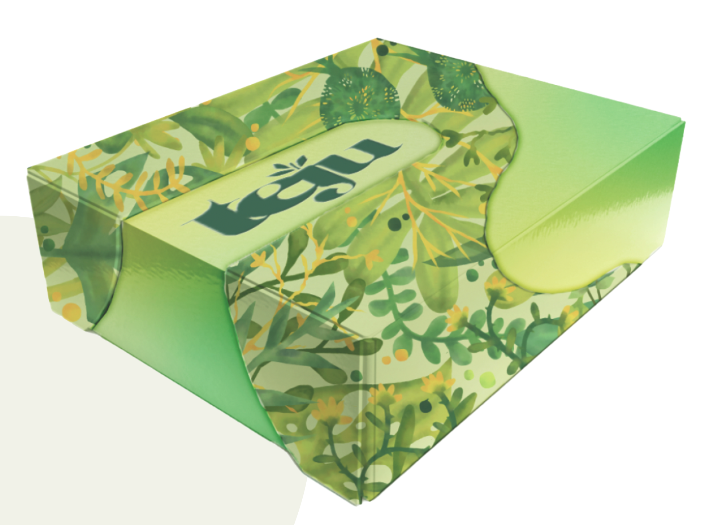

For this rebranding project, I revitalised Kairos, Gil's brand that focuses on both physical and mental well-being through a combination of exercise and the principles of Feng Shui. The new identity reflects Gil's mission to connect with people, helping them achieve balance and fulfilment. By incorporating soft, neutral colours like beige and pale blue, the design creates a sense of calm that aligns with the brand's philosophy of fostering peaceful environments. This approach promotes holistic health, supporting individuals in their journey towards a healthier, more fulfilled life through personalised coaching and meaningful connections.
